Using the same in-private browser instance, navigate to the Power Apps site site.
In the top right of the screen, ensure the Environment is set to AIBuilderEnv.
With your environment selected choose AI Models from the navigation. If it is not visible you might have to click the … More navigation to add it to the menu.

In the main portion of the screen click on the Documents tab to filter the results.
Finally, select Extract information from receipts
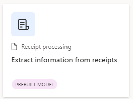
In the dialog, click on Use prebuilt model and choose Use in a flow option from the dropdown. This means we will build a re-usable Power Automate Flow to create a re-usable Flow to Extract all the text in photos and PDF documents (OCR).
Select the Track expenses by scanning receipts to your OneDrive for Business template that is already pre-created.
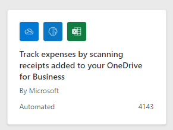
Very similiar to the previous exercise validate that you see green checks next to all the connections. Then click Continue
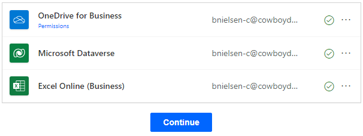
Before configuring the Flow click on the nine square in the upper-right hand corner. Then select the three dots next to OneDrive and choose Open in new tab
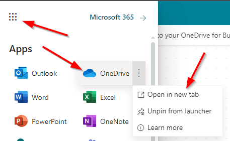
In OneDrive click on the Add new button and choose Files upload
Upload the following file Receipts.xlsx from the Lab Downloads file in the **AIBuilderLabFiles_Contoso** folder.
Return to the Flow tab in the browser
There are two steps that need additional configuration. Select the first step called When a file is created. When selected the properties panel will open. Click on the folder icon and choose Root to select the top level folder in OneDrive.

Now select the fourth, and last step, called Add a row into a table. Note: this does require the file to uploaded from the previous step.
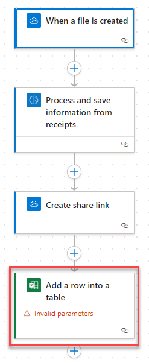
In the properties panel choose the Document Library and select OneDrive
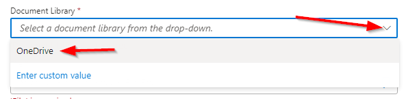
Next click on the folder icon and select the Receipts.xlsx file previously uploaded.
In the Table dropdown select Table1 which is defined in the Excel spreadsheet that was uploaded to OneDrive.
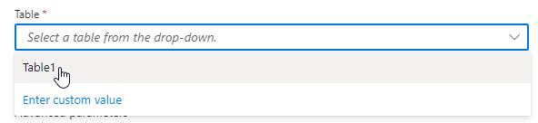
The view after configured.
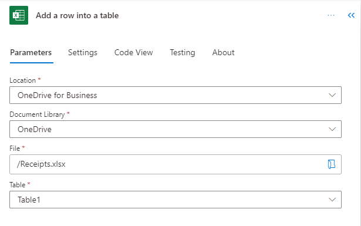
In the Advanced parameters section you should see some pre-populated values. Click on the Show all link. This will show all the potential values available.
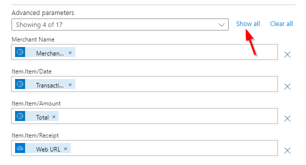
From the DateTime Format dropdown choose ISO 8601
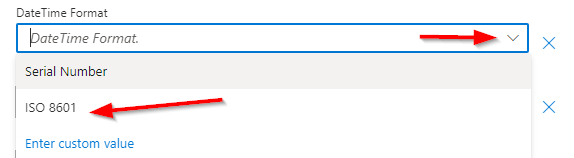
To add additional parameters you can use the following animation to assist.
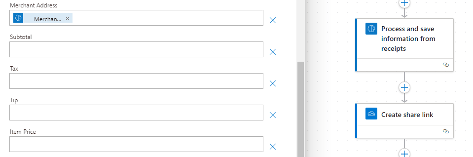
Click on Save in the upper right-hand corner

Remove the following unnesserry options by clicking the X button. Then click Save again.
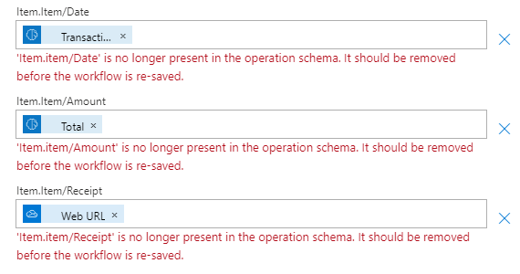
Then click on Test and choose the radio button for Manually and finally click the Test button. This will start the flow to monitor for uploaded files to OneDrive.
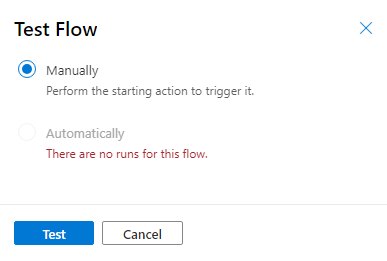
Switch back to the OneDrive tab and upload one of the sample receipts from the C:_Contoso folder.
This shows the completed Flow
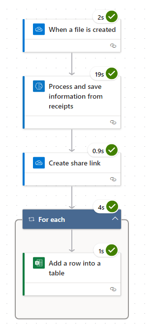
Now switch back to the OneDrive tab and open the Receipts.xlsx file
Depending on the parameters added and file chosen you might see different values
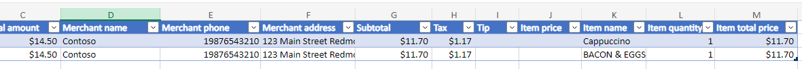
The values were parsed from the uploaded reciept and stored in the spreadsheet.